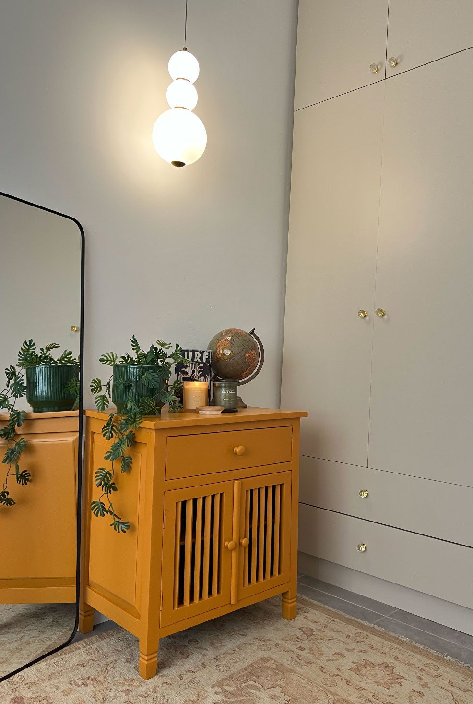
ספרייה מחודשת בגוון חרדל
רהיט שנרכש ביפו וקיבל חיים חדשים באמצעות צבע, סטיילינג וחשיבה על כל פרט בחלל.
פריטים, עבודות חומר ואומנות שנוצרים במיוחד לבית, למשרד ולעסק.
לא כל רהיט צריך לשמור, ולא כל רהיט צריך לזרוק. חלק מהפריטים מאבדים את המקום שלהם בבית, ואחרים רק מחכים שמישהו יזהה את הפוטנציאל שלהם.
בתהליך העיצוב אני בוחנת מה נכון לחלל, מה כדאי לחדש, מה אפשר להפוך לייחודי, ומתי דווקא נכון להיפרד מפריט ולפנות מקום למשהו חדש.
חידוש רהיטים, פסיפס, עבודות חומר ואומנות מאפשרים ליצור פריטים עם סיפור, זיכרון ואופי, כאלה שלא מגיעים מקטלוג אלא נולדים מתוך הבית והאנשים שחיים בו.
יש רהיטים שכדאי לשחרר, ויש כאלה שמסתתר בהם פוטנציאל חדש. החוכמה היא לדעת מה נכון לשמור, מה אפשר לחדש ומה כבר לא מתאים לחלל.

רהיט שנרכש ביפו וקיבל חיים חדשים באמצעות צבע, סטיילינג וחשיבה על כל פרט בחלל.

אור, צמחייה וחפצים אישיים מחברים בין ישן לחדש.

לפעמים שינוי של פריט אחד משפיע על כל התחושה בחלל.
פריטי ריהוט שנולדים מתוך החלל עצמו. משלב הרעיון, דרך החומר והייצור, ועד לרגע שבו הרהיט הופך לחלק מהבית או מהמשרד.
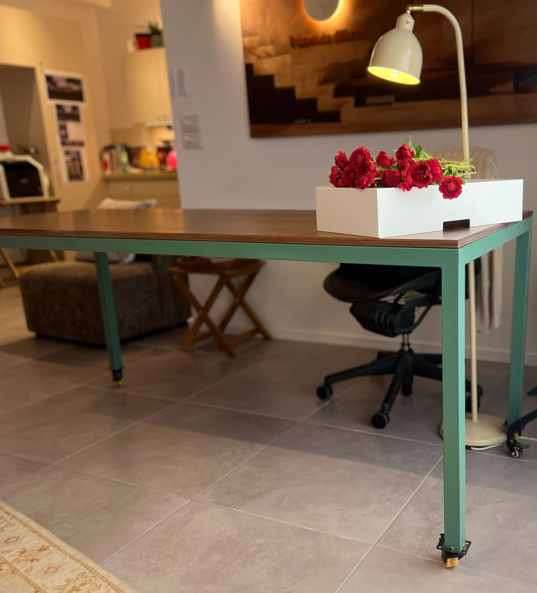
כשהחומר, הצבע והתכנון מתחברים, הרהיט הופך לחלק מהסיפור של החלל.
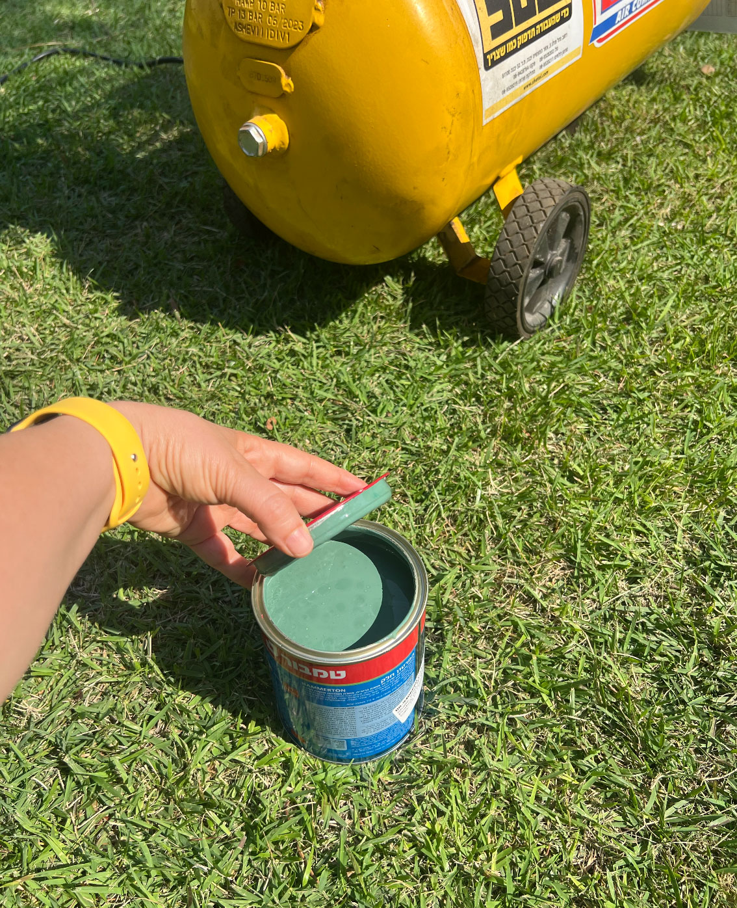
החיפוש אחר הצבע המדויק שמתחבר לחלל.
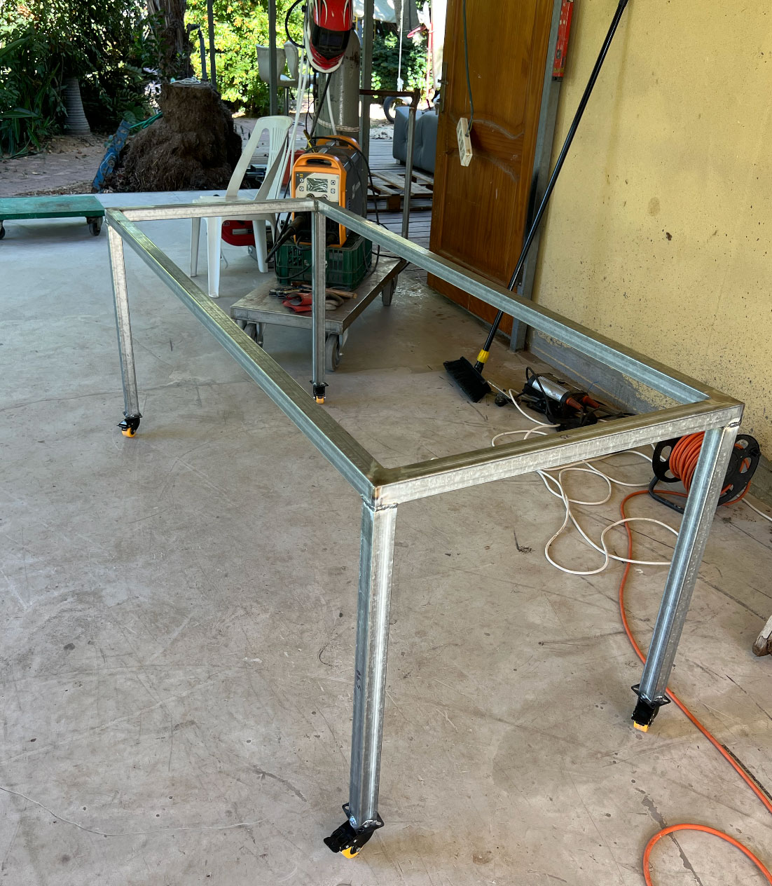
מהרעיון הראשוני ועד הבסיס שמגדיר את הצורה.
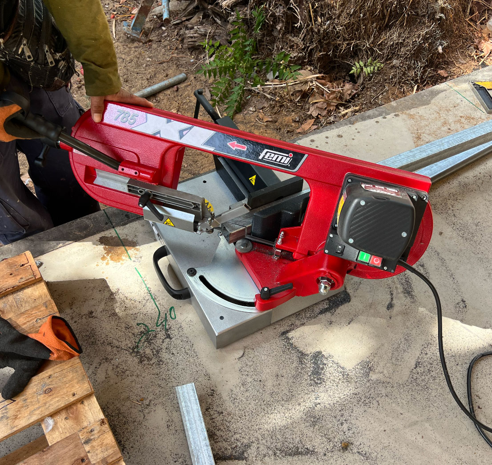
השלב שבו הרעיון הופך לחומר ולמבנה.
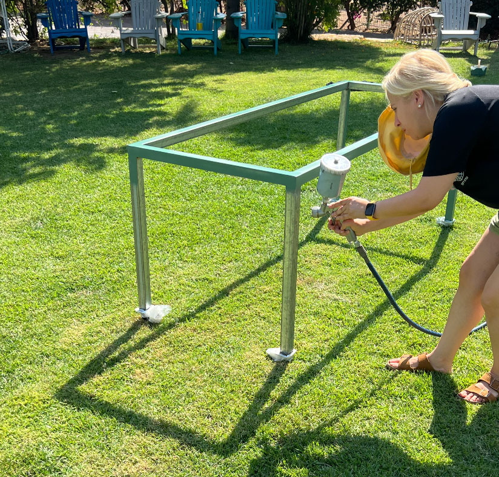
הצבע והגימור הופכים את הרהיט לחלק מהשפה של החלל.
יש חפצים שנושאים איתם סיפור. באמצעות שימור וחשיבה עיצובית אפשר לשלב נוסטלגיה בתוך חלל עכשווי בלי לאבד את האופי המקורי.
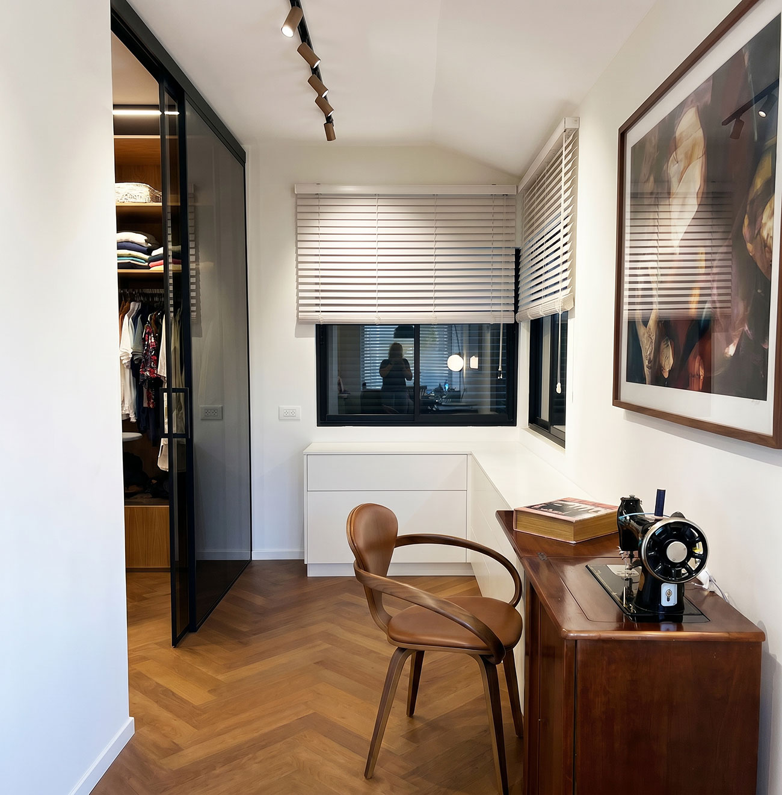
פריט שעבר מדור לדור וקיבל חיים חדשים כחלק מפינת הלבשה מעוצבת.
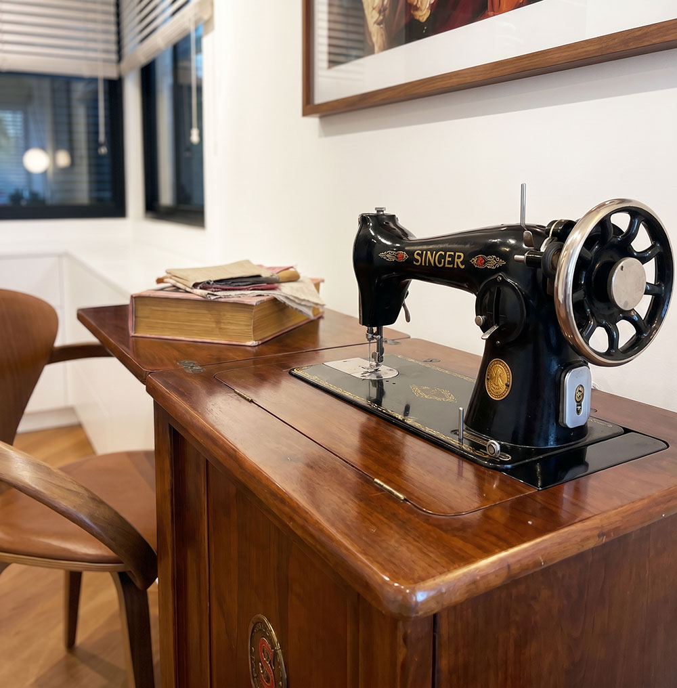
חידוש עדין ששומר על החומר, הזיכרון והערך הרגשי.
רהיטים ישנים מקבלים חיים חדשים באמצעות צבע, פסיפס ועבודות חומר.
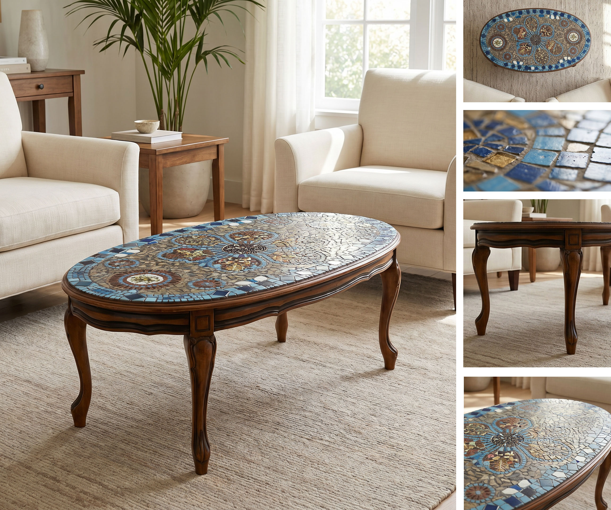
רהיט ישן שהפך לפריט שימושי עם נוכחות.
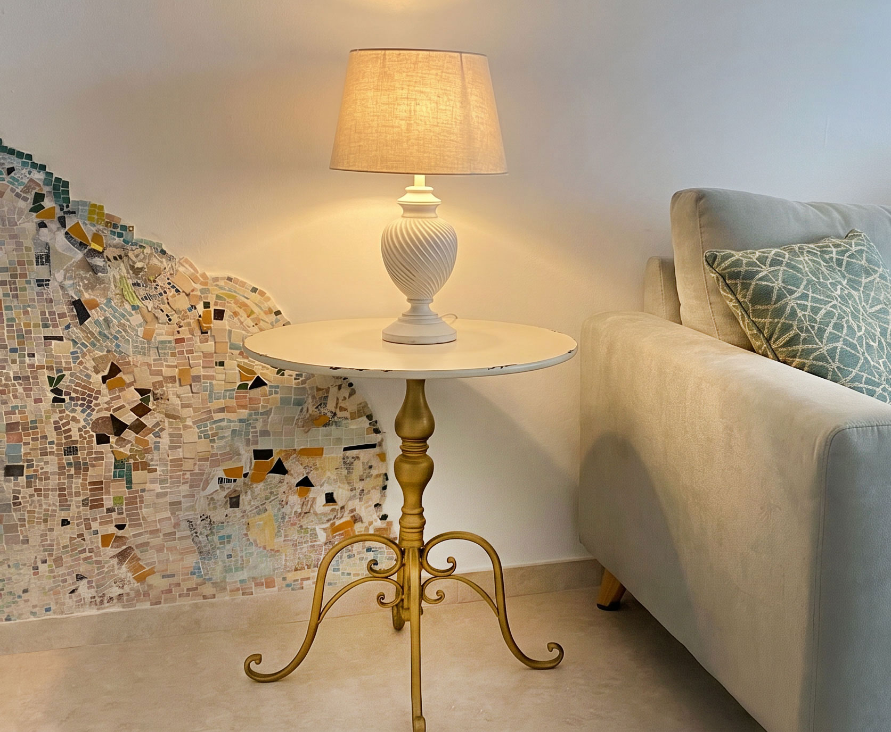
חידוש בצבע ובמשטח שהעניק לרהיט חיים חדשים.
מתוך אהבה לטבע, לצבע ולעבודת יד, חומרים אורגניים מקבלים חיים חדשים והופכים לאובייקטים אמנותיים. כל פריט נוצר בתהליך אישי ומשלב חומר, זיכרון ודמיון.
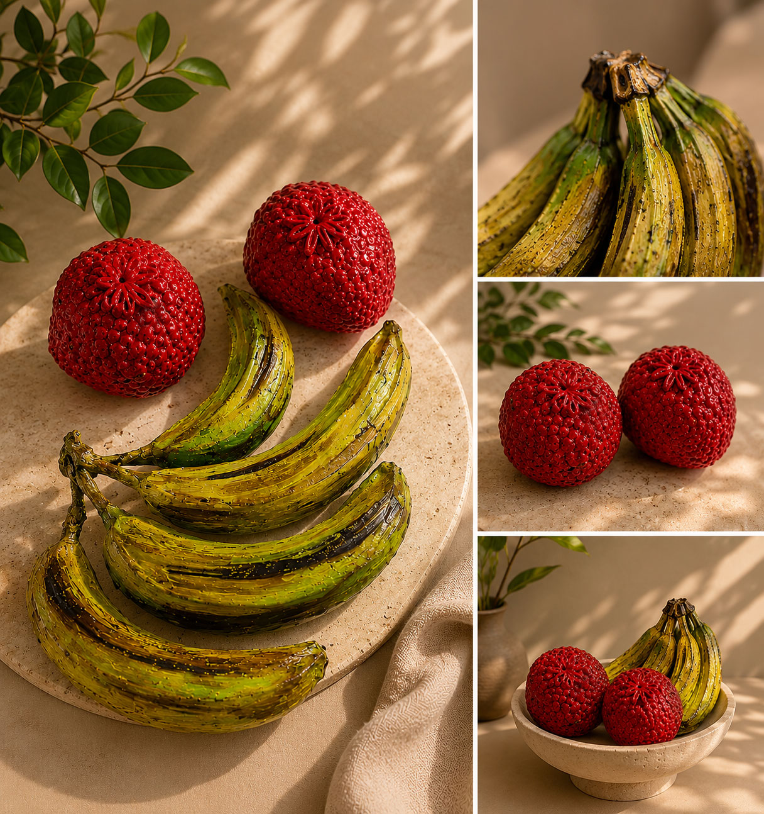
עלים, ענפים ואלמנטים טבעיים עוברים תהליך של שימור, צבע ויצירה והופכים לאובייקטים אמנותיים ייחודיים.
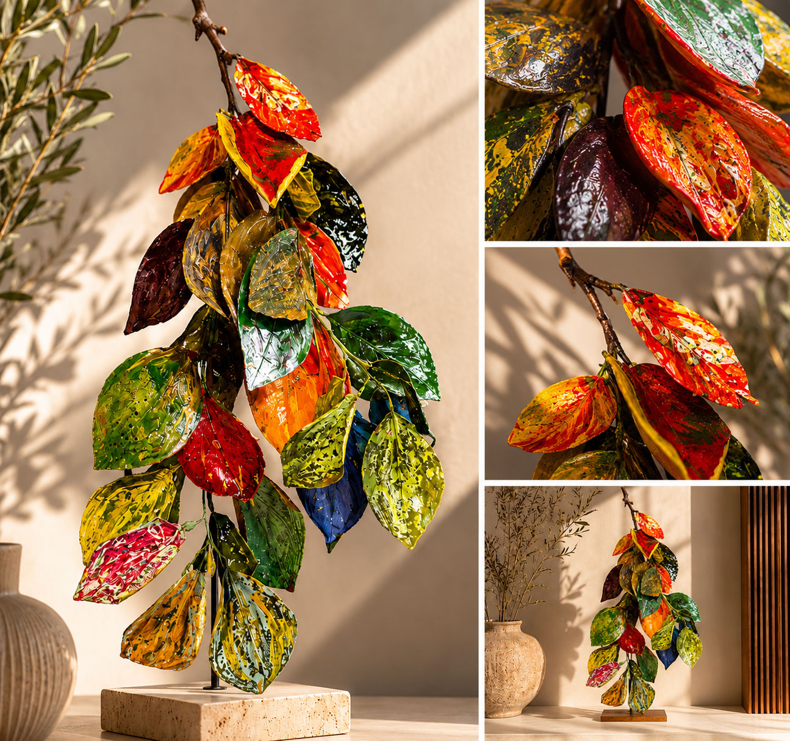
אובייקטים מהטבע מקבלים פרשנות אמנותית חדשה באמצעות צבע, חומר וטקסטורה ומעניקים לחלל נוכחות מקורית.
כשהיא מדויקת, היא מעניקה לבית או לעסק את מה שאי אפשר לקנות מוכן: אופי.
יצירות ופריטי חומר זמינים לרכישה או להזמנה בהתאמה אישית.